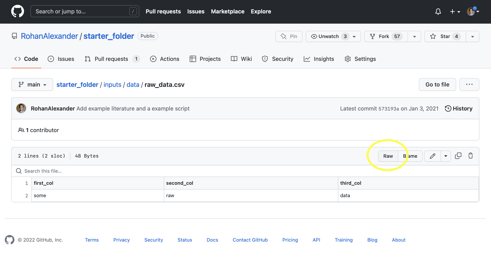

library(arrow)
library(devtools)
# library(diffpriv)
library(fs)
library(janitor)
library(openssl)
# library(tictoc)
library(tidyverse)
library(tinytable)선수 지식
- 연구 데이터 관리를 통한 오픈 사이언스 촉진, (Borghi 와/과 Van Gulick 2022)
- 데이터 관리 현황과 더 재현 가능한 연구를 수행하기 위한 몇 가지 전략을 설명합니다.
- 대규모 교육 연구의 데이터 관리, (Lewis 2024)
- 데이터 관리 문제, 워크플로 및 용어에 대한 개요를 제공하는 2장 “연구 데이터 관리”에 집중하세요.
- 투명하고 재현 가능한 사회 과학 연구, (Christensen, Freese, 와/과 Miguel 2019)
- 데이터를 공유하는 방법을 명시하는 10장 “데이터 공유”에 집중하세요.
- 데이터셋을 위한 데이터시트, (Gebru 기타 2021)
- 데이터시트의 개념을 소개합니다.
- 데이터 및 그 (불)내용: 기계 학습 연구에서 데이터셋 개발 및 사용에 대한 조사, (Paullada 기타 2021)
- 기계 학습에서 데이터의 현황을 자세히 설명합니다.
핵심 개념 및 기술
- FAIR 원칙은 데이터 공유 및 저장에 대한 우리의 고려의 기초를 제공합니다. 이는 데이터가 찾을 수 있고(findable), 접근 가능하며(accessible), 상호 운용 가능하고(interoperable), 재사용 가능해야 함(reusable)을 명시합니다.
- 가장 중요한 단계는 첫 번째 단계이며, 이는 데이터를 로컬 컴퓨터에서 가져와 다른 사람들이 접근할 수 있도록 하는 것입니다. 그 후, 다른 사람들이 데이터를 더 쉽게 이해하고 사용할 수 있도록 문서화 및 데이터시트를 구축합니다. 마지막으로, 이상적으로는 우리의 개입 없이 접근을 가능하게 합니다.
- 데이터셋을 가능한 한 널리 공유하고자 하는 동시에, 데이터셋에 포함된 정보의 주체를 존중해야 합니다. 이는 예를 들어, 선택적 공개, 해싱, 데이터 시뮬레이션 및 차등 프라이버시를 통해 개인 식별 정보를 합리적인 범위 내에서, 비용과 이점을 고려하여 보호하는 것을 의미합니다.
- 마지막으로, 데이터가 커질수록 작을 때 가능했던 접근 방식이 무너지기 시작합니다. 효율성을 고려하고, 다른 접근 방식, 형식 및 언어를 탐색해야 합니다.
소프트웨어 및 패키지
- Base R (R Core Team 2024)
arrow(Richardson 기타 2023)devtools(Wickham 기타 2022)diffpriv(Rubinstein 와/과 Alda 2017)fs(Hester, Wickham, 와/과 Csárdi 2021)janitor(Firke 2023)openssl(Ooms 2022)tictoc(Izrailev 2022)tidyverse(Wickham 기타 2019)tinytable(Arel-Bundock 2024)
10.1 서론
데이터셋을 구성한 후에는 적절하게 저장하고 자신과 다른 사람들이 쉽게 검색할 수 있도록 해야 합니다. 완전히 합의된 접근 방식은 없지만, 최상의 표준은 있으며, 이는 진화하는 연구 분야입니다(Lewis 2024). (Wicherts2011은?) 데이터 공유를 꺼리는 것이 증거가 약하고 잠재적 오류가 더 많은 연구 논문과 관련이 있음을 발견했습니다. 이에 대해 특히 우려할 수 있지만(그리고 전체 경력과 학문 분야가 데이터 저장 및 검색을 기반으로 함), 어느 정도는 기본선이 부담스럽지 않습니다. 데이터셋을 자신의 컴퓨터에서 가져올 수 있다면, 우리는 거의 다 온 것입니다. 다른 사람이 우리의 개입 없이도 이상적으로는 데이터를 검색하고 사용할 수 있음을 추가로 확인하면, 우리는 대부분의 사람들보다 훨씬 더 나아갑니다. 데이터, 모델 및 코드에 대해 이것을 달성하는 것만으로도 (heil2021reproducibility의?) “브론즈” 표준을 충족합니다.
FAIR 원칙은 데이터 공유 및 관리에 대해 더 공식적으로 생각할 때 유용합니다. 이는 데이터셋이 다음을 충족해야 함을 요구합니다(Wilkinson 기타 2016).
- 찾을 수 있음(Findable). 데이터셋에 대한 고유하고 변경되지 않는 식별자가 있으며, 데이터셋에는 고품질 설명이 있습니다.
- 접근 가능함(Accessible). 데이터를 검색하는 데 표준화된 접근 방식을 사용할 수 있으며, 이는 개방적이고 무료이며, 인증이 필요할 수 있으며, 데이터셋이 제거되더라도 메타데이터는 지속됩니다.
- 상호 운용 가능함(Interoperable). 데이터셋 및 해당 메타데이터는 광범위하게 적용 가능한 언어 및 어휘를 사용합니다.
- 재사용 가능함(Reusable). 데이터셋에 대한 광범위한 설명이 있으며, 사용 조건은 출처와 함께 명확하게 명시됩니다.
데이터 과학이 부상하는 한 가지 이유는 인간이 그 중심에 있기 때문입니다. 그리고 종종 우리가 관심 있는 데이터는 직접적으로 인간과 관련이 있습니다. 이는 재현성을 용이하게 하기 위해 데이터셋을 공유하는 것과 개인 정보 보호를 유지하는 것 사이에 긴장이 있을 수 있음을 의미합니다. 의학은 오랫동안 이에 대한 접근 방식을 개발했습니다. 그리고 그 결과로 미국에서는 HIPAA(Health Insurance Portability and Accountability Act), 2016년에 유럽에서 도입된 더 광범위한 GDPR(General Data Protection Regulation), 그리고 2018년에 도입된 CCPA(California Consumer Privacy Act) 등이 있습니다.
데이터 과학에서 우리의 관심사는 주로 개인 식별 정보입니다. 이메일 주소와 집 주소와 같은 특히 개인 정보를 보호하는 다양한 방법이 있습니다. 예를 들어, 해당 변수를 해싱할 수 있습니다. 때로는 데이터를 시뮬레이션하고 실제 데이터셋을 공유하는 대신 시뮬레이션된 데이터를 배포할 수도 있습니다. 최근에는 차등 프라이버시를 기반으로 한 접근 방식이 구현되고 있으며, 예를 들어 미국 인구 조사에 적용되고 있습니다. 데이터 프라이버시의 근본적인 문제는 개인 정보 보호가 강화될수록 데이터셋의 유용성이 감소한다는 것입니다. 이러한 절충안은 미묘하며 비용과 이점에 따라 적절한 결정이 달라지며, 우리는 인구 소수자에 대한 차등적인 영향에 특히 주의해야 합니다.
데이터셋이 FAIR하다고 해서 반드시 세상의 편향되지 않은 표현은 아닙니다. 또한, 일상적인 의미에서 공정하다는 의미(즉, 공정하고 정직하다는 의미)는 아닙니다(Lima 기타 2022). FAIR은 데이터셋이 적절하게 사용 가능한지 여부를 반영하며, 적절한지 여부를 반영하지는 않습니다.
마지막으로, 이 장에서는 효율성을 고려합니다. 데이터셋과 코드베이스가 커질수록 특히 공유하고자 할 때 다루기가 더 어려워집니다. 우리는 효율성에 대한 우려를 제기합니다. 그 자체를 위해서가 아니라, 다른 방법으로는 말할 수 없었던 이야기를 할 수 있도록 하기 위함입니다. 이는 CSV 파일을 넘어 다른 속성을 가진 형식으로 이동하거나, Postgres와 같은 데이터베이스를 사용하는 것을 의미할 수 있습니다. 비록 그렇게 하더라도 CSV의 단순성(텍스트 기반이므로 사람이 검사하기에 적합함)이 유용한 기능이 될 수 있음을 인정합니다.
10.2 계획
정보의 저장 및 검색은 특히 전통적인 의미의 도서관과 관련이 있습니다. 이들은 고대부터 존재해 왔으며, 어떤 정보를 저장하고 어떤 정보를 버릴지 결정하는 잘 확립된 프로토콜과 정보 검색 기능을 가지고 있습니다. 도서관의 결정적인 측면 중 하나는 의도적인 큐레이션과 조직입니다. 카탈로그 시스템을 사용하면 유사한 주제의 책이 서로 가까이 위치하도록 보장하며, 일반적으로 컬렉션이 최신 상태를 유지하도록 의도적인 계획도 있습니다. 이를 통해 적절하고 효율적인 정보 저장 및 검색이 가능합니다.
데이터 과학은 저장 및 검색과 관련하여 인터넷에 크게 의존합니다. 20세기 엔지니어인 배니버 부시는 1945년에 “메멕스”를 기억을 보완하는 방식으로 책, 기록 및 통신을 저장하는 장치로 정의했습니다(Bush 1945). 핵심은 항목의 인덱싱 또는 연결이었습니다. 우리는 이 개념이 불과 40년 후 팀 버너스-리의 하이퍼텍스트 제안(Berners-Lee 1989)에서 반복되는 것을 봅니다. 이는 월드 와이드 웹으로 이어졌고, 리소스가 식별되는 방식을 정의합니다. 그런 다음 HTTP(Hypertext Transfer Protocol)를 사용하여 인터넷을 통해 전송됩니다.
가장 근본적으로 인터넷은 데이터를 저장하고 검색하는 것입니다. 이는 컴퓨터의 다양한 파일을 다른 사람들이 사용할 수 있도록 하는 것을 기반으로 합니다. 데이터셋의 저장 및 검색을 고려할 때, 우리는 특히 얼마나 오랫동안 저장해야 하는지, 그리고 누구를 위해 저장해야 하는지 신중하게 고려해야 합니다(Michener 2015). 예를 들어, 어떤 데이터셋을 10년 동안 사용할 수 있도록 하고, 널리 사용할 수 있도록 하려면, 개방적이고 영구적인 형식으로 저장하는 것이 중요합니다(Hart 기타 2016). 그러나 데이터셋을 중간 단계의 일부로만 사용하고, 원본, 편집되지 않은 데이터와 그것을 생성하는 스크립트를 가지고 있다면, 그러한 고려 사항에 대해 너무 걱정하지 않아도 괜찮을 수 있습니다. 물리적 저장 매체의 진화는 유사한 복잡한 문제를 가지고 있습니다. 예를 들어, 왁스 실린더, 자기 테이프 및 독점 광학 디스크와 같은 매체에 저장된 데이터셋 및 기록은 이제 사용 편의성이 다양합니다.
원본, 편집되지 않은 데이터를 저장하는 것은 중요하며, 편집되지 않은 데이터가 사기를 드러내거나 암시한 많은 사례가 있습니다(Simonsohn 2013). 공유 데이터는 또한 다른 사람들이 그것을 확인할 수 있도록 함으로써 우리의 작업의 신뢰성을 높이고, 다른 사람들이 다른 질문에 답하기 위해 그것을 사용함으로써 새로운 지식의 생성을 이끌 수 있습니다(Christensen, Freese, 와/과 Miguel 2019). (christensen2019study는?) 데이터를 공유하는 연구가 더 많이 인용될 수 있다고 제안하지만, (Tierney2021은?) 광범위한 데이터 공유가 문화적 변화를 필요로 할 수 있다고 경고합니다.
우리는 조사를 환영하고 비판을 받는 것을 가능한 한 쉽게 만들어야 합니다. 어려운 선택이고 불편함을 초래하더라도 그렇게 하려고 노력해야 합니다. 왜냐하면 그것이 지속적인 지식의 축적에 기여하는 유일한 방법이기 때문입니다. 예를 들어, (pillerblots는?) 알츠하이머병 연구에서 잠재적인 조작을 자세히 설명합니다. 이 경우 연구자들이 결과가 합법적인지 이해하려고 할 때 직면하는 문제 중 하나는 미공개 이미지에 대한 접근 부족입니다.
데이터 출처는 특히 중요합니다. 이는 “데이터 조각이 어디에서 왔는지, 그리고 데이터베이스에 도달한 과정”을 문서화하는 것을 의미합니다(Buneman, Khanna, 와/과 Wang-Chiew 2001, p. 316). 원본, 편집되지 않은 데이터셋을 문서화하고 저장하고, 스크립트를 사용하여 분석되는 데이터셋을 생성하고, 이 모든 것을 공유하는 것(이 책에서 권장하는 바와 같이)은 이를 달성하는 데 도움이 됩니다. 일부 분야에서는 소수의 데이터베이스만 여러 팀에서 사용되는 것이 일반적입니다. 예를 들어, 유전학에서는 UK BioBank가, 생명 과학에서는 ORCESTRA(Mammoliti 기타 2021)라는 클라우드 기반 플랫폼이 구축되어 있습니다.
10.3 공유
10.3.1 GitHub
데이터셋을 저장하는 가장 쉬운 방법은 GitHub입니다. 왜냐하면 이미 우리의 워크플로에 내장되어 있기 때문입니다. 예를 들어, 데이터셋을 공개 리포지토리에 푸시하면 데이터셋을 사용할 수 있게 됩니다. 이점 중 하나는 작업 공간을 적절하게 설정했다면 원본, 편집되지 않은 데이터와 정돈된 데이터, 그리고 하나를 다른 것으로 변환하는 데 필요한 스크립트를 저장할 가능성이 높다는 것입니다. 우리는 아무것도 변경하지 않고도 (heil2021reproducibility의?) “브론즈” 표준에 거의 도달합니다.
일부 데이터를 저장한 방법의 예로, “starter_folder”에서 “raw_data.csv”에 접근할 수 있습니다. GitHub에서 파일로 이동한 다음(“inputs” \(\rightarrow\) “data” \(\rightarrow\) “raw_data.csv”) “Raw”를 클릭합니다(그림 fig-githubraw).

그런 다음 해당 URL을 read_csv()의 인수로 추가할 수 있습니다.
data_location <-
paste0(
"https://raw.githubusercontent.com/RohanAlexander/",
"starter_folder/main/data/01-raw_data/raw_data.csv"
)
starter_data <-
read_csv(file = data_location,
col_types = cols(
first_col = col_character(),
second_col = col_character(),
third_col = col_character()
)
)
starter_data# A tibble: 1 × 3
first_col second_col third_col
<chr> <chr> <chr>
1 some raw data 이러한 방식으로 데이터셋을 쉽게 저장하고 검색할 수 있지만, 설명, 공식 사전, 그리고 FAIR 원칙과 일치하는 라이선스와 같은 측면이 부족합니다. 또 다른 실제적인 문제는 GitHub의 최대 파일 크기가 100MB라는 것입니다. 그러나 필요한 경우 Git Large File Storage(LFS)를 사용할 수 있습니다. 그리고 일부에게는 마지막 우려는 GitHub가 영리 기업인 Microsoft의 소유라는 것입니다.
10.3.2 데이터용 R 패키지
지금까지 우리는 주로 코드를 위해 R 패키지를 사용했지만, sec-static-communication에서 troopdata와 babynames와 같이 데이터 공유에 초점을 맞춘 몇 가지 패키지를 보았습니다. 데이터셋을 위한 R 패키지를 구축한 다음 GitHub에 추가하고 잠재적으로 CRAN에 추가할 수 있습니다. 이렇게 하면 패키지를 로드하여 데이터셋을 얻을 수 있으므로 저장 및 검색이 쉬워집니다. CSV 기반 접근 방식과 달리, 데이터셋은 자체 문서를 함께 가져옵니다.
이것은 우리가 구축할 첫 번째 R 패키지이므로 여러 단계를 건너뛸 것입니다. 핵심은 작동하는 것을 얻으려고 노력하는 것입니다. sec-production에서는 R 패키지로 돌아가 모델을 배포하는 데 사용합니다. 이것은 우리가 그것들을 더 경험할 수 있는 또 다른 기회를 제공합니다.
시작하려면 새 패키지를 만드십시오: “파일” \(\rightarrow\) “새 프로젝트” \(\rightarrow\) “새 디렉토리” \(\rightarrow\) “R 패키지”. 패키지에 “favcolordata”와 같은 이름을 지정하고 “새 세션에서 열기”를 선택하십시오. “data”라는 새 폴더를 만드십시오. R 패키지에 포함할 사람들과 그들의 좋아하는 색상에 대한 데이터셋을 시뮬레이션할 것입니다.
set.seed(853)
color_data <-
tibble(
name =
c(
"에드워드", "헬렌", "휴고", "이안", "모니카",
"마일스", "패트리샤", "로저", "로한", "루스"
),
fav_color =
sample(
x = colors(),
size = 10,
replace = TRUE
)
)지금까지 우리는 데이터셋에 주로 CSV 파일을 사용했습니다. 이 R 패키지에 데이터를 포함하려면 save()를 사용하여 데이터셋을 다른 형식인 “.rda”로 저장합니다.
save(color_data, file = "data/color_data.rda")그런 다음 “R” 폴더에 “data.R” 파일을 만듭니다. 이 파일은 roxygen2 주석을 사용하여 문서만 포함합니다. 이들은 #'로 시작하며, troopdata의 문서를 면밀히 따릅니다.
#' 다양한 사람들의 좋아하는 색상 데이터
#'
#' @description \code{favcolordata}는 다양한 사람들의 좋아하는 색상에 대한 데이터프레임을 반환합니다.
#'
#' @return 다양한 사람들의 좋아하는 색상에 대한 데이터프레임을 반환합니다.
#'
#' @docType data
#'
#' @usage data(color_data)
#'
#' @format 다음 변수를 가진 개별 수준 관측치의 데이터프레임:
#'
#' \describe{
#' \item{\code{name}}{개별 이름의 문자 벡터.}
#' \item{\code{fav_color}}{색상의 문자 벡터.}
#' }
#'
#' @keywords 데이터셋
#'
#' @source \url{tellingstorieswithdata.com/10-store_and_share.html}
#'
"color_data"마지막으로, 프로젝트를 처음 접하는 사람에게 이 모든 것을 요약하는 README를 추가하십시오. 훌륭한 README를 가진 패키지의 예로는 ggplot2, pointblank, modelsummary, janitor가 있습니다.
이제 “빌드” 탭으로 이동하여 “설치 및 다시 시작”을 클릭할 수 있습니다. 이 후 “favcolordata” 패키지가 로드되고 “color_data”를 사용하여 로컬에서 데이터에 접근할 수 있습니다. 이 패키지를 GitHub에 푸시하면 누구나 devtools를 사용하여 패키지를 설치하고 데이터셋을 사용할 수 있습니다. 실제로 다음이 작동해야 합니다.
install_github("RohanAlexander/favcolordata")
library(favcolordata)
color_data이것은 우리가 이전에 직면했던 많은 문제를 해결했습니다. 예를 들어, README와 데이터 사전을 추가했습니다. 그러나 이 패키지를 CRAN에 올리려고 한다면 몇 가지 문제에 직면할 수 있습니다. 예를 들어, 패키지의 최대 크기는 5MB이며, 우리는 빠르게 그 한계에 도달할 것입니다. 또한 사용자에게 R을 사용하도록 강요했습니다. 이점도 있지만, 특히 FAIR 원칙에 관심이 있다면 더 언어에 구애받지 않는 것을 선호할 수 있습니다(Tierney 와/과 Ram 2020).
Wickham (2022, 8장)은 R 패키지에 데이터를 포함하는 방법에 대한 더 많은 정보를 제공합니다.
10.3.3 데이터 예치
데이터셋이 GitHub 또는 R 패키지를 통해 사용 가능할 경우 인용될 가능성이 있지만, 데이터셋이 어딘가에 예치될 경우 더 가능성이 높아집니다. 여기에는 몇 가지 이유가 있지만, 그 중 하나는 좀 더 공식적으로 보인다는 것입니다. 또 다른 이유는 DOI와 관련이 있다는 것입니다. Zenodo와 Open Science Framework(OSF)는 일반적으로 사용되는 두 가지 저장소입니다. 예를 들어, (chris_carleton_2021_4550688은?) Zenodo를 사용하여 (carleton2021reassessment를?) 뒷받침하는 데이터셋과 분석을 공유하고, (geuenich_michael_2021_5156049는?) Zenodo를 사용하여 (geuenich2021automated를?) 뒷받침하는 데이터셋을 공유하며, (katzhansard는?) Zenodo를 사용하여 (katz2023digitization을?) 뒷받침하는 데이터셋을 공유합니다. 마찬가지로, (ryansnewpaper는?) OSF를 사용하여 코드와 데이터를 공유합니다.
또 다른 옵션은 하버드 데이터버스 또는 호주 데이터 아카이브와 같은 데이터버스를 사용하는 것입니다. 이는 저널 출판의 일반적인 요구 사항입니다. 이 중 좋은 점은 재현 가능한 워크플로의 일부로 dataverse를 사용하여 데이터셋을 검색할 수 있다는 것입니다. 이에 대한 예시는 sec-its-just-a-generalized-linear-model에 있습니다.
일반적으로 이러한 옵션은 무료이며 인용 목적으로 유용할 수 있는 DOI를 제공합니다. 이러한 데이터 예치를 사용하는 것은 데이터셋의 지속적인 호스팅에 대한 책임을 덜어주고(이 경우 좋은 일임) 데이터셋이 손실되는 것을 방지하는 방법입니다. 또한 단일 진실 지점을 설정하여 오류를 줄이는 데 도움이 됩니다(Byrd 기타 2020). 마지막으로, 원본 연구자와 독립적으로 데이터셋에 접근할 수 있게 하고 영구적인 메타데이터를 생성합니다. 이 모든 것을 고려할 때, 이러한 옵션의 실행 가능성은 기본 기관에 달려 있습니다. 예를 들어, Zenodo는 CERN에서 운영하며 많은 데이터버스는 대학에서 운영합니다. 이러한 기관은 우리 모두와 마찬가지로 사회적, 정치적 힘의 영향을 받습니다.
10.4 데이터 문서화
데이터셋 문서화는 오랫동안 데이터 사전으로 구성되어 왔습니다. 이는 변수 목록, 몇 문장의 설명, 그리고 이상적으로는 출처와 같이 간단할 수 있습니다. sec-farm-data에서 소개된 ACS의 데이터 사전은 특히 포괄적입니다. 그리고 OSF는 데이터 사전을 만드는 방법에 대한 지침을 제공합니다. 이 책에서 옹호하는 워크플로를 고려할 때, 시뮬레이션 단계, 즉 데이터를 수집하기 전부터 데이터 사전을 실제로 구성하기 시작하는 것이 좋습니다. 업데이트가 필요하겠지만, 데이터 상황에 대해 더 깊이 생각할 수 있는 또 다른 기회가 될 것입니다.
데이터시트 (Gebru 기타 2021)는 문서화에 점점 더 흔하게 추가되고 있습니다. 데이터 사전을 데이터셋의 재료 목록으로 생각한다면, 데이터시트는 기본적으로 데이터셋의 영양 성분표로 생각할 수 있습니다. 그것들을 만드는 과정은 우리가 모델에 무엇을 공급할지 더 신중하게 생각할 수 있게 해줍니다. 더 중요하게는, 다른 사람들이 우리가 모델에 무엇을 공급했는지 더 잘 이해할 수 있게 해줍니다. 중요한 작업 중 하나는 널리 사용되는 데이터셋에 대한 데이터시트를 다시 작성하는 것입니다. 예를 들어, 연구자들은 컴퓨터 과학에서 가장 인기 있는 데이터셋 중 하나인 “BookCorpus”에 대한 데이터시트를 다시 작성했으며, 데이터의 약 30%가 중복되었음을 발견했습니다.
10.5 거인의 어깨 위에 서서
팀닛 게브루는 분산 인공지능 연구소(DAIR)의 설립자입니다. 스탠포드 대학교에서 컴퓨터 과학 박사 학위를 받은 후, 게브루는 Microsoft에 합류한 다음 Google에 합류했습니다. 데이터시트를 소개한 Bandy 와/과 Vincent (2021) 외에도, 주목할 만한 논문 중 하나는 (Bender2021로?), 언어 모델이 너무 커지는 것의 위험성을 논의했습니다. 그녀는 특히 (buolowini2018gender와?) 같이 공정성과 책임에 대한 다른 많은 중요한 기여를 했으며, 이는 얼굴 분석 알고리즘의 인종적 편향을 입증했습니다.
데이터시트는 다양한 음식의 건강에 좋지 않은 점을 알려주는 대신, 다음과 같은 정보를 알려줍니다.
- 누가 데이터셋을 만들었습니까?
- 누가 데이터셋 생성 비용을 지불했습니까?
- 데이터셋은 얼마나 완전합니까? (물론 답할 수 없는 질문이지만, 불완전한 것으로 알려진 방식을 자세히 설명하는 것은 가치가 있습니다.)
- 특정 관측치에 대해 어떤 변수가 존재하고, 마찬가지로 어떤 변수가 존재하지 않습니까?
때로는 데이터시트를 만드는 데 많은 노력이 필요합니다. 이 경우, 예를 들어 Biderman, Bicheno, 와/과 Gao (2022) 및 (bandy2021addressing과?) 같이 자체적으로 게시하고 공유할 수도 있습니다. 그러나 일반적으로 데이터시트는 논문의 부록에 있거나, 예를 들어 (zhang2022opt와?) 같이 데이터셋 옆 파일에 포함될 수 있습니다.
데이터셋에 대한 데이터시트를 만들 때, 특히 우리가 직접 만들지 않은 데이터셋의 경우, 일부 질문에 대한 답변이 단순히 “알 수 없음”일 수 있지만, 우리는 그것을 최소화하기 위해 할 수 있는 모든 것을 해야 합니다. (gebru2021datasheets가?) 만든 데이터시트 템플릿이 최종적인 것은 아닙니다. 그것을 개선하고 때로는 추가 세부 정보를 추가할 수도 있습니다. 예를 들어, (Miceli2022는?) 권력 관계와 관련된 질문을 추가할 것을 주장합니다.
10.6 개인 식별 정보
배경 지식으로, Christensen, Freese, 와/과 Miguel (2019, p. 180)는 연구자가 각 관측치와 관련된 사람을 알지만, 데이터셋의 공개 버전은 이 연관성을 제거하는 경우 변수를 “기밀”이라고 정의합니다. 연구자조차도 모르는 경우 변수는 “익명”입니다.
개인 식별 정보(PII)는 데이터셋의 관측치를 실제 사람과 연결할 수 있게 하는 정보입니다. 이는 사람에 대한 데이터에 초점을 맞춘 분야에서 중요한 관심사입니다. 이메일 주소는 종종 PII이며, 이름과 주소도 마찬가지입니다. 일부 변수는 많은 응답자에게 PII가 아닐 수 있지만, 일부에게는 PII일 수 있습니다. 예를 들어, 인구 연령 분포를 대표하는 설문 조사를 고려해 보십시오. 100세 이상의 응답자는 많지 않을 것이므로, 연령 변수는 PII가 될 수 있습니다. 동일한 시나리오가 소득, 재산 및 다른 많은 변수에도 적용됩니다. 이에 대한 한 가지 대응은 sec-farm-data에서 논의된 바와 같이 데이터를 검열하는 것입니다. 예를 들어, 연령을 0세에서 90세 사이로 기록한 다음, 그 이상은 “90세 이상”으로 그룹화할 수 있습니다. 이 두 가지 해결책 모두 개인 정보 보호와 유용성 사이에서 절충해야 한다는 점에 유의하십시오. 더 우려스러운 것은 변수가 그 자체로는 PII가 아니지만, 다른 변수와 결합될 때 PII가 될 수 있다는 것입니다. 한 가지 우려는 데이터셋을 결합하여 재식별이 발생할 수 있다는 것이며, 이는 차등 프라이버시의 잠재적 역할입니다.
우리의 주요 관심사는 합리적인 사람의 기대치를 고려할 때 데이터셋의 개인 정보 보호가 적절한지 확인하는 것입니다. 이는 비용과 이점을 비교해야 합니다. 국가 안보 환경에서는 문서의 과도한 분류에 대한 상당한 우려가 있었습니다(Lin 2014). 이로 인한 정보 유통 감소는 실현되지 않은 이점으로 이어질 수 있습니다. 데이터 과학에서 이를 피하기 위해 데이터셋을 보호할 필요성에 대한 테스트는 비용과 이점을 비교하는 합리적인 사람에 의해 이루어져야 합니다. 데이터가 완벽하게 익명화되지 않으면 공개되어서는 안 된다고 주장하는 것은 쉽지만 잘못된 것입니다. 데이터 프라이버시의 근본적인 문제는 그러한 데이터가 제한적인 유용성을 가질 것이라는 것을 의미합니다. 예방 원칙에 의해 동기 부여되었을 수 있는 그러한 접근 방식은 너무 보수적이며 실현되지 않은 이점 측면에서 상당한 손실을 초래할 수 있습니다.
무작위 응답(Greenberg 기타 1969)은 오버헤드 없이 익명성을 가능하게 하는 영리한 방법입니다. 각 응답자는 질문에 답하기 전에 동전을 던지지만, 연구자에게 동전 던지기 결과를 보여주지 않습니다. 응답자는 동전이 앞면이 나오면 질문에 진실하게 응답하고, 뒷면이 나오면 항상 특정(그러나 여전히 그럴듯한) 응답을 하도록 지시받습니다. 그런 다음 다른 옵션의 결과를 재가중하여 추정치를 얻을 수 있으며, 연구자는 특정 응답자에 대한 진실을 결코 알 수 없습니다. 이것은 sec-farm-data에서 논의된 눈덩이 표집과 관련하여 특히 사용됩니다. 무작위 응답의 한 가지 문제는 결과 데이터셋이 특정 질문에만 답하는 데 사용될 수 있다는 것입니다. 이는 신중한 계획이 필요하며, 데이터셋은 일반적인 가치가 떨어질 것입니다.
(zook2017ten은?) 애초에 데이터를 수집할 필요가 있는지 고려할 것을 권장합니다. 예를 들어, 전화번호가 절대적으로 필요하지 않다면, 데이터 배포 전에 보호하는 것에 대해 걱정할 필요 없이 요청하지 않는 것이 더 나을 수 있습니다. GDPR과 HIPAA는 각각 유럽과 미국에서 데이터를 규제하는 두 가지 법적 구조입니다. 이 지역의 영향력 때문에 이들은 해당 지역 외부에서도 상당한 영향을 미칩니다. GDPR은 일반적으로 데이터를 다루는 반면, HIPAA는 의료에 중점을 둡니다. GDPR은 모든 개인 데이터에 적용되며, 이는 다음과 같이 정의됩니다.
\(\dots\)식별되거나 식별 가능한 자연인(“데이터 주체”)과 관련된 모든 정보; 식별 가능한 자연인은 특히 이름, 식별 번호, 위치 데이터, 온라인 식별자 또는 해당 자연인의 신체적, 생리적, 유전적, 정신적, 경제적, 문화적 또는 사회적 정체성에 특정한 하나 이상의 요소를 참조하여 직간접적으로 식별될 수 있는 사람입니다.
Council of European Union (2016), 제4조, “정의”
HIPAA는 미국 의료 기록의 개인 정보 보호를 다루며, 환자가 자신의 의료 기록에 접근할 수 있어야 하고, 환자만이 자신의 의료 기록에 대한 접근을 승인할 수 있어야 한다는 아이디어를 성문화합니다(Annas 2003). HIPAA는 특정 기관에만 적용됩니다. 이는 표준을 설정하지만, 적용 범위는 일관성이 없다는 것을 의미합니다. 예를 들어, 사람의 건강에 대한 소셜 미디어 게시물은 일반적으로 적용되지 않으며, 사람의 위치 및 활동량에 대한 지식도 마찬가지입니다. 비록 그 정보에 기반하여 그들의 건강에 대한 어떤 아이디어를 얻을 수 있더라도 말입니다(Cohen 와/과 Mello 2018). 그러한 데이터는 엄청나게 가치가 있습니다(Ross 2022).
PII를 보호하면서도 일부 데이터를 공유하는 다양한 방법이 있으며, 이제 이를 살펴보겠습니다. 우리는 주로 데이터셋 자체를 고려할 때 할 수 있는 일에 초점을 맞춥니다. 이것이 주요 관심사입니다. 그러나 때로는 여러 변수의 조합이 그 자체로는 PII가 아니지만 PII가 될 수 있습니다. 예를 들어, 연령은 그 자체로는 PII가 아닐 가능성이 높지만, 도시, 교육 및 몇 가지 다른 변수와 결합되면 PII가 될 수 있습니다. 한 가지 우려는 데이터셋을 결합하여 재식별이 발생할 수 있다는 것이며, 이는 차등 프라이버시의 잠재적 역할입니다.
10.6.1 해싱
암호화 해시는 동일한 입력이 항상 동일한 출력을 제공하지만, 출력이 주어졌을 때 입력을 합리적으로 얻을 수 없는 단방향 변환입니다. 예를 들어, 입력을 두 배로 늘리는 함수는 항상 동일한 입력에 대해 동일한 출력을 제공하지만, 역변환이 쉽기 때문에 해시로 잘 작동하지 않을 것입니다. 대조적으로, 음수가 아닌 숫자에 대한 나눗셈 후 나머지인 모듈로(R에서 %%를 사용하여 구현할 수 있음)는 역변환이 어려울 것입니다.
Knuth (1998, p. 514)는 “해시”에 대한 흥미로운 어원학을 설명합니다. 그는 먼저 “해시하다”를 잘게 썰거나 엉망으로 만드는 것과 관련하여 정의한 다음, 해싱이 입력을 스크램블하고 이 부분 정보를 사용하여 출력을 정의하는 것과 관련이 있다고 설명합니다. 충돌은 다른 입력이 동일한 출력에 매핑될 때 발생하며, 좋은 해싱 알고리즘의 특징 중 하나는 충돌이 줄어든다는 것입니다. 언급했듯이, 한 가지 간단한 접근 방식은 모듈로 연산자에 의존하는 것입니다. 예를 들어, 1부터 10까지의 정수에 대해 10개의 다른 그룹화에 관심이 있다면 모듈로가 이를 가능하게 할 것입니다. 더 나은 접근 방식은 그룹화 수가 더 큰 숫자여야 합니다. 왜냐하면 이렇게 하면 동일한 해시 결과를 가진 값의 수가 줄어들기 때문입니다.
예를 들어, 응답자의 이름과 나이와 같이 비공개로 유지하고 싶은 정보가 있다고 가정해 봅시다.
some_private_information <-
tibble(
names = c("로한", "모니카"),
ages = c(36, 35)
)
some_private_information# A tibble: 2 × 2
names ages
<chr> <dbl>
1 로한 36
2 모니카 35이름에 대한 한 가지 옵션은 각 이름의 첫 글자만 가져오는 함수를 사용하는 것입니다. 그리고 나이에 대한 한 가지 옵션은 로마 숫자로 변환하는 것입니다.
some_private_information |>
mutate(
names = substring(names, 1, 1),
ages = as.roman(ages)
)# A tibble: 2 × 2
names ages
<chr> <roman>
1 로 XXXVI
2 모 XXXV 첫 번째 변수인 이름에 대한 접근 방식은 이름이 역추적될 수 없기 때문에 좋지만, 문제는 데이터셋이 커질수록 “충돌”이 많이 발생할 가능성이 높다는 것입니다. 즉, “로한”과 “로버트”와 같이 다른 입력이 모두 동일한 출력(이 경우 “R”)을 얻는 상황입니다. 두 번째 변수인 나이에 대한 접근 방식은 반대 상황입니다. 이 경우 충돌은 전혀 없을 것입니다. 즉, “36”은 항상 “XXXVI”에 매핑되는 유일한 입력일 것입니다. 그러나 로마 숫자를 아는 사람이라면 실제 데이터를 쉽게 역추적할 수 있습니다.
자체 해시 함수를 작성하는 대신 openssl의 md5()와 같은 암호화 해시 함수를 사용할 수 있습니다.
some_private_information |>
mutate(
md5_names = md5(names),
md5_ages = md5(ages |> as.character())
)# A tibble: 2 × 4
names ages md5_names md5_ages
<chr> <dbl> <hash> <hash>
1 로한 36 ceab857c3d9c264aabdcf25fb8fbf875 19ca14e7ea6328a42e0eb13d585e4c22
2 모니카 35 ea0f20dd9f8fd6af9dc250aca9a7ff1a 1c383cd30b7c298ab50293adfecb7b18이러한 변환된 변수 중 하나를 공유하고, 그 정보만으로는 응답자의 이름을 복구하기 어려울 것이라고 확신할 수 있습니다. 불가능하다는 것은 아닙니다. 데이터를 암호화하는 데 사용되는 문자열을 의미하는 키를 알면 역변환이 가능합니다. 실수로 원본 데이터셋을 GitHub에 푸시했다면 복구될 수 있습니다. 그리고 정부와 일부 민간 기업은 여기에 사용된 암호화 해시를 역변환할 수 있을 가능성이 높습니다.
남아 있는 한 가지 문제는 누구나 해시의 핵심 기능을 활용하여 입력을 역추적할 수 있다는 것입니다. 특히, 동일한 입력은 항상 동일한 출력을 얻습니다. 따라서 입력에 대한 다양한 옵션을 테스트할 수 있습니다. 예를 들어, 직접 “로한”을 해시한 다음, 우리가 게시한 해시와 동일하다는 것을 확인하여 해당 데이터가 해당 개인과 관련이 있음을 알 수 있습니다. 해싱 접근 방식을 비밀로 유지하려고 노력할 수 있지만, 널리 사용되는 것이 몇 개밖에 없기 때문에 어렵습니다. 한 가지 접근 방식은 비밀로 유지하는 솔트를 추가하는 것입니다. 이것은 입력을 약간 변경합니다. 예를 들어, 모든 이름에 “_is_a_person” 솔트를 추가한 다음 해시할 수 있지만, 큰 무작위 숫자가 더 나은 옵션일 수 있습니다. 솔트가 공유되지 않는 한, 대부분의 사람들은 그러한 방식으로 우리의 접근 방식을 역추적하기 어려울 것입니다.
some_private_information |>
mutate(names = paste0(names, "_is_a_person")) |>
mutate(
md5_of_salt = md5(names)
)# A tibble: 2 × 3
names ages md5_of_salt
<chr> <dbl> <hash>
1 로한_is_a_person 36 182657578691f54d15f20eeba048046b
2 모니카_is_a_person 35 7279d085a861ab11148e2ec4dcf0beb710.6.2 시뮬레이션
분석의 기반이 되는 실제 데이터를 공유할 수 없는 문제를 해결하는 일반적인 접근 방식 중 하나는 데이터 시뮬레이션을 사용하는 것입니다. 우리는 이 책 전체에서 워크플로 시작 부분에서 데이터 시뮬레이션을 사용하여 데이터셋에 대해 더 깊이 생각하는 데 도움을 주었습니다. 워크플로 끝 부분에서 데이터 시뮬레이션을 다시 사용하여 다른 사람들이 실제 데이터셋에 접근할 수 없도록 할 수 있습니다.
접근 방식은 데이터셋의 핵심 기능과 적절한 분포를 이해하는 것입니다. 예를 들어, 데이터가 어떤 모집단의 연령이라면, 우리는 푸아송 분포를 사용하고 다른 매개변수로 실험할 수 있습니다. 데이터셋을 시뮬레이션한 후, 이 시뮬레이션된 데이터셋을 사용하여 분석을 수행하고, 실제 데이터를 사용할 때와 결과가 대략적으로 유사한지 확인합니다. 그런 다음 시뮬레이션된 데이터셋을 코드와 함께 공개할 수 있습니다.
더 미묘한 상황의 경우, (koenecke2020synthetic은?) 합성 데이터 볼트(Patki, Wedge, 와/과 Veeramachaneni 2016)를 사용한 다음, (athey2021using에서?) 구현된 것과 같은 생성적 적대 신경망을 사용할 것을 권장합니다.
10.6.3 차등 프라이버시
차등 프라이버시는 개인 정보 보호의 수학적 정의입니다(Dwork 와/과 Roth 2013, p. 6). 단 하나의 알고리즘이 아니라, 많은 알고리즘이 충족하는 정의입니다. 또한, 차등 프라이버시는 여러 개인 정보 보호 정의 중 하나일 뿐입니다. 이것이 해결하는 주요 문제는 사용 가능한 데이터셋이 많다는 것입니다. 이는 PII가 각 개별 데이터셋에서 제거되었더라도, 그것들의 어떤 조합이 응답자를 식별하는 데 사용될 수 있는 가능성이 항상 있다는 것을 의미합니다. 예를 들어, 넷플릭스 상 경험에서 사용 가능한 데이터셋을 IMBD의 데이터로 보강하면 더 나은 예측이 가능했으며, 이는 왜 이런 일이 그렇게 흔하게 발생하는지 보여줍니다. 다양한 데이터셋이 개인을 재식별하는 데 어떻게 결합될 수 있는지 예측하고 이러한 가능성을 제거하기 위해 변수를 조정할 필요 없이, 차등 프라이버시 접근 방식을 사용하여 생성된 데이터셋은 개인 정보 보호가 유지될 것이라는 보장을 제공합니다.
10.7 거인의 어깨 위에 서서
신시아 드워크는 하버드 대학교 컴퓨터 과학 고든 맥케이 교수입니다. 코넬 대학교에서 컴퓨터 과학 박사 학위를 받은 후, MIT에서 박사후 연구원으로 재직했으며, IBM, Compaq, Microsoft Research에서 근무하며 저명한 과학자로 활동했습니다. 그녀는 2017년 하버드에 합류했습니다. 그녀의 주요 기여 중 하나는 차등 프라이버시(Dwork 기타 2006)이며, 이는 널리 사용되고 있습니다.
정의를 동기 부여하기 위해, 응답과 PII가 포함된 데이터셋을 고려해 봅시다. 이 데이터셋에는 한 사람만 포함되어 있습니다. 이 데이터셋을 그대로 공개하면 그들을 완벽하게 식별할 수 있습니다. 다른 한편으로, 특정 사람이 포함되지 않은 데이터셋을 고려해 봅시다. 이 데이터셋을 공개하면 일반적으로 그들과 연결될 수 없습니다. 왜냐하면 그들이 데이터셋에 없기 때문입니다.1 따라서 차등 프라이버시는 데이터셋에 특정 개인이 포함되거나 제외되는 것과 관련이 있습니다. 어떤 알고리즘이 차등적으로 프라이빗하다는 것은 데이터셋에 특정 개인이 포함되거나 제외되는 것이 어떤 출력의 확률에 최대 어떤 주어진 요인만큼만 영향을 미친다는 것을 의미합니다(Oberski 와/과 Kreuter 2020). 데이터 프라이버시의 근본적인 문제는 유용한 상태를 유지하면서 완전히 익명화된 데이터를 가질 수 없다는 것입니다(Dwork 와/과 Roth 2013, p. 6). 대신, 유용성과 개인 정보 보호 사이에서 절충해야 합니다.
데이터셋은 개인 정보 보호 수준에 따라 차등적으로 프라이빗합니다. 이는 한 사람의 결과가 포함되거나 제외될 때 얼마나 변하는지에 따라 달라집니다. 이것이 핵심 매개변수입니다. 왜냐하면 개인의 정보를 얼마나 포기할 준비가 되어 있는지 결정하는 동시에, 출력에 영향을 미칠 무작위 노이즈를 얼마나 추가할지 결정하기 때문입니다. 이 수준의 선택은 미묘하며, 원치 않는 공개의 비용과 추가 연구의 이점을 고려해야 합니다. 차등 프라이버시로 공개될 공공 데이터의 경우, 결정의 이유는 부과되는 비용 때문에 공개되어야 합니다. 실제로, (differentialprivacyatapple은?) Apple과 같이 차등 프라이버시를 사용하는 민간 기업의 경우에도 사용자가 개인 정보 손실 수준을 선택할 수 있어야 한다고 주장합니다.
교수가 특정 과제에 대한 평균 점수를 공개하고 싶다고 가정해 봅시다. 교수는 그 정보에도 불구하고 어떤 학생도 다른 학생의 점수를 알아낼 수 없도록 하고 싶습니다. 예를 들어, 다음과 같은 점수를 가진 작은 수업을 고려해 봅시다.
set.seed(853)
grades <-
tibble(ps_1 = sample(x = (1:100), size = 10, replace = TRUE))
mean(grades$ps_1)[1] 50.5교수는 정확한 평균을 발표할 수 있습니다. 예를 들어, “첫 번째 문제 세트의 평균은 50.5였습니다.” 이론적으로, 한 명을 제외한 모든 학생은 다른 사람들에게 자신의 점수를 알릴 수 있습니다. 그러면 그 그룹은 자신의 점수를 공개하지 않기로 동의한 학생의 점수를 알아낼 수 있을 것입니다.
비통계적 접근 방식은 교수가 “대략”이라는 단어를 추가하는 것입니다. 예를 들어, 교수는 “첫 번째 문제 세트의 평균은 대략 50.5였습니다.”라고 말할 수 있습니다. 학생들은 동일한 전략을 시도할 수 있지만, 확실하게 알 수는 없을 것입니다. 교수는 평균에 노이즈를 추가하여 이에 대한 더 통계적인 접근 방식을 구현할 수 있습니다.
mean(grades$ps_1) + runif(n = 1, min = -2, max = 2)[1] 48.91519교수는 이 수정된 평균을 발표할 수 있습니다. 이렇게 하면 학생들의 계획이 더 어려워질 것입니다. 이 접근 방식의 한 가지 특징은 지속적인 질문에는 작동하지 않는다는 것입니다. 예를 들어, 결국 학생들은 교수가 추가한 노이즈의 분포를 역추적할 수 있을 것입니다. 한 가지 함의는 교수가 문제 세트의 평균에 대해 답변하는 쿼리 수를 제한해야 한다는 것입니다.
차등 프라이버시 접근 방식은 이것의 정교한 버전입니다. diffpriv를 사용하여 구현할 수 있습니다. 이것은 우리가 발표할 수 있는 평균을 생성합니다(표 tbl-diffprivaexample).
# diffpriv 예시를 기반으로 한 코드
target <- function(X) mean(X)
mech <- DPMechLaplace(target = target)
distr <- function(n) rnorm(n)
mech <- sensitivitySampler(mech, oracle = distr, n = 5, gamma = 0.1)
r <- releaseResponse(mech,
privacyParams = DPParamsEps(epsilon = 1),
X = grades$ps_1)차등 프라이버시의 구현은 비용과 이점의 문제입니다(Hotz 기타 2022; Kenny 기타 2023). 더 강력한 개인 정보 보호는 근본적으로 더 적은 정보를 의미해야 하며(Bowen 2022, p. 39), 이는 사회의 다양한 측면에 다르게 영향을 미칩니다. 예를 들어, (Suriyakumar2021은?) 의료 맥락에서 차등적으로 프라이빗한 학습이 대규모 인구 통계 그룹에 의해 불균형적으로 영향을 받는 모델을 초래할 수 있음을 발견했습니다. 차등 프라이버시의 변형이 최근 미국 인구 조사에 구현되었습니다. 이는 재분배에 상당한 영향을 미칠 수 있으며(Kenny 기타 2021), 사회 과학에서 사용할 수 없는 일부 공개 데이터를 초래할 수 있습니다(Ruggles 기타 2019).
10.8 데이터 효율성
대부분의 경우, 완벽한 것보다 완료하는 것이 낫고, 불필요한 최적화는 자원 낭비입니다. 그러나 어느 시점에서는 특히 데이터셋이 커질수록 데이터를 다루는 새로운 방식을 채택해야 합니다. 여기서는 여러 파일을 반복하는 것에 대해 논의한 다음, Apache Arrow 및 parquet 사용으로 전환합니다. 또 다른 자연스러운 단계는 SQL 사용이며, 이는 온라인 부록 sec-sql에서 다룹니다.
10.8.1 반복
데이터를 더 효율적으로 만드는 방법은 여러 가지가 있습니다. 특히 데이터가 커질수록 더욱 그렇습니다. 첫 번째이자 가장 분명한 방법은 더 큰 데이터셋을 더 작은 조각으로 나누는 것입니다. 예를 들어, 1년치 데이터셋이 있다면 월별 또는 일별로 나눌 수 있습니다. 이를 가능하게 하려면 여러 파일을 빠르게 읽어들일 수 있는 방법이 필요합니다.
여러 파일을 읽어들여 하나의 티블로 결합해야 하는 것은 놀랍도록 흔한 작업입니다. 예를 들어, 1년치 데이터가 각 월별로 개별 CSV 파일에 저장될 수 있습니다. purrr와 fs를 사용하여 이를 수행할 수 있습니다. 이 상황을 설명하기 위해 rexp()를 사용하여 지수 분포에서 데이터를 시뮬레이션할 것입니다. 이러한 데이터는 예를 들어 소셜 미디어 플랫폼의 댓글을 반영할 수 있으며, 대부분의 댓글은 극소수의 사용자가 작성합니다. fs의 dir_create()를 사용하여 폴더를 만들고, 월별 데이터를 시뮬레이션하고 저장할 것입니다. 그런 다음 읽어들이는 것을 설명할 것입니다.
dir_create(path = "user_data")
set.seed(853)
simulate_and_save_data <- function(month) {
num_obs <- 1000
file_name <- paste0("user_data/", month, ".csv")
user_comments <-
tibble(
user = c(1:num_obs),
month = rep(x = month, times = num_obs),
comments = rexp(n = num_obs, rate = 0.3) |> round()
)
write_csv(
x = user_comments,
file = file_name
)
}
walk(month.name |> tolower(), simulate_and_save_data)각 월이 다른 CSV로 저장된 데이터셋을 생성했으므로 이제 읽어들일 수 있습니다. 이를 수행하는 다양한 방법이 있습니다. 첫 번째 단계는 디렉토리의 모든 CSV 파일 목록을 가져오는 것입니다. 여기서는 “glob” 인수를 사용하여 “.csv” 파일에만 관심이 있음을 지정하며, 이는 관심 있는 파일에 따라 변경될 수 있습니다.
files_of_interest <-
dir_ls(path = "user_data/", glob = "*.csv")
files_of_interest [1] "February.csv" "January.csv" "april.csv" "august.csv"
[5] "december.csv" "july.csv" "june.csv" "march.csv"
[9] "may.csv" "november.csv" "october.csv" "september.csv"이 목록을 read_csv()에 전달하면 파일을 읽어들여 결합합니다.
year_of_data <-
read_csv(
files_of_interest,
col_types = cols(
user = col_double(),
month = col_character(),
comments = col_double(),
)
)
year_of_data# A tibble: 12,000 × 3
user month comments
<dbl> <chr> <dbl>
1 1 february 3
2 2 february 2
3 3 february 1
4 4 february 7
5 5 february 1
6 6 february 1
7 7 february 1
8 8 february 7
9 9 february 3
10 10 february 0
# ℹ 11,990 more rows4월의 첫 10일을 출력합니다. 알파벳순으로 4월이 첫 번째 달이므로 가장 먼저 읽힌 CSV입니다.
이것은 CSV 파일이 있을 때 잘 작동하지만, 항상 CSV 파일이 있는 것은 아니므로 다른 방법이 필요하며, map_dfr()를 사용하여 이를 수행할 수 있습니다. 이 접근 방식의 좋은 점 중 하나는 “.id”를 사용하여 관측치와 함께 파일 이름을 포함할 수 있다는 것입니다. 여기서는 해당 열을 “file”이라고 부르고 싶다고 지정하지만, 무엇이든 될 수 있습니다.
year_of_data_using_purrr <-
files_of_interest |>
map_dfr(read_csv, .id = "file")# A tibble: 12,000 × 4
file user month comments
<chr> <dbl> <chr> <dbl>
1 February.csv 1 february 3
2 February.csv 2 february 2
3 February.csv 3 february 1
4 February.csv 4 february 7
5 February.csv 5 february 1
6 February.csv 6 february 1
7 February.csv 7 february 1
8 February.csv 8 february 7
9 February.csv 9 february 3
10 February.csv 10 february 0
# ℹ 11,990 more rows10.8.2 Apache Arrow
CSVs는 데이터 과학에서 별 생각 없이 흔히 사용됩니다. CSV는 오버헤드가 적고 수동으로 검사할 수 있다는 장점이 있지만, 이는 또한 매우 최소한의 형식을 의미합니다. 이로 인해 문제가 발생할 수 있습니다. 예를 들어, 클래스가 보존되지 않고 파일 크기가 커져 저장 및 성능 문제가 발생할 수 있습니다. Apache Arrow를 포함한 다양한 대안이 있으며, 이는 CSV와 달리 데이터를 행이 아닌 열로 저장합니다. 우리는 Apache Arrow의 “.parquet” 형식에 초점을 맞춥니다. CSV와 마찬가지로 parquet은 개방형 표준입니다. R 패키 arrow는 이 형식을 사용할 수 있도록 합니다. parquet을 사용하면 상당한 이점을 제공하면서도 우리에게 거의 변화를 요구하지 않는다는 장점이 있습니다.
10.9 거인의 어깨 위에 서서
웨스 맥키니는 MIT에서 이론 수학 학사 학위를 받았습니다. 2008년부터 AQR Capital Management에서 근무하면서 데이터 과학의 초석이 된 Python 패키지 pandas를 개발했습니다. 그는 나중에 Python for Data Analysis(McKinney [2011년] 2022)를 썼습니다. 2016년에는 해들리 위컴과 함께 Feather를 설계했으며, 이는 2016년에 출시되었습니다. 그는 현재 Apache Arrow 프로젝트에 중점을 둔 Voltron Data의 CTO로 일하고 있습니다.
특히, 우리는 분석 데이터셋을 정리하고 준비한 후 저장할 때와 같이 데이터 저장에 parquet을 사용하는 이점에 초점을 맞춥니다. 다른 측면 중에서도 parquet은 CSV에 비해 두 가지 특정 이점을 제공합니다.
- 파일 크기가 일반적으로 더 작습니다. 그리고
- parquet은 스키마를 첨부하므로 클래스가 보존되어 날짜 및 요인과 같은 것을 다루기가 훨씬 쉽습니다.
arrow를 로드한 후 CSV 파일과 유사한 방식으로 parquet 파일을 사용할 수 있습니다. write_csv() 및 read_csv()를 사용했던 코드의 어느 곳에서든 write_parquet() 및 read_parquet()를 대신 또는 추가로 사용할 수 있습니다. parquet을 사용할지 여부에 대한 결정은 비용과 이점을 모두 고려해야 하며, 이는 활발한 개발 영역입니다.
num_draws <- 1000000
# 오마주: https://www.rand.org/pubs/monograph_reports/MR1418.html
a_million_random_digits <-
tibble(
numbers = runif(n = num_draws),
letters = sample(x = letters, size = num_draws, replace = TRUE),
states = sample(x = state.name, size = num_draws, replace = TRUE),
)
write_csv(x = a_million_random_digits,
file = "a_million_random_digits.csv")
write_parquet(x = a_million_random_digits,
sink = "a_million_random_digits.parquet")
file_size("a_million_random_digits.csv")29.3Mfile_size("a_million_random_digits.parquet")8.17Mwrite_parquet()로 parquet 파일을 작성하고 read_parquet()로 parquet 파일을 읽을 수 있습니다. 각 형식으로 저장된 동일한 데이터셋의 크기를 비교할 때 파일 크기가 크게 줄어듭니다. 특히 파일 크기가 커질수록 더욱 그렇습니다(표 tbl-filesize). parquet을 사용하면 대규모 데이터셋에서 속도 이점이 가장 두드러집니다. 이는 비실용적인 것에서 사용 가능한 것으로 바꿉니다.
| 숫자 | CSV 크기 | CSV 쓰기 시간 (초) | CSV 읽기 시간 (초) | Parquet 크기 | Parquet 쓰기 시간 (초) | Parquet 읽기 시간 (초) |
|---|---|---|---|---|---|---|
| 1e+02 | 3,102.72 | 0.01 | 0.26 | 2,713.6 | 0.01 | 0 |
| 1e+03 | 30,720 | 0.02 | 0.27 | 11,366.4 | 0.01 | 0 |
| 1e+04 | 307,415.04 | 0.02 | 0.3 | 101,969.92 | 0.01 | 0.01 |
| 1e+05 | 3,072,327.68 | 0.03 | 0.28 | 1,040,885.76 | 0.04 | 0.01 |
| 1e+06 | 30,712,791.04 | 0.15 | 0.58 | 8,566,865.92 | 0.22 | 0.05 |
| 1e+07 | 307,117,424.64 | 1 | 2.95 | 82,952,847.36 | 1.76 | 0.42 |
| 1e+08 | 3,070,901,616.64 | 7.65 | 32.89 | 827,137,720.32 | 16.12 | 4.85 |
(arrowcookbook는?) 특정 작업에 대한 추가 정보를 제공하고, (navarro2021getting은?) 유용한 구현 예시를 제공하며, (navarroworkshop은?) 광범위한 자료를 제공합니다. parquet 파일을 데이터셋에만 사용해야 하는지에 대한 합의는 없습니다. 그러나 클래스의 지속성만으로도 CSV 외에 parquet을 포함해야 하는 강력한 이유가 있다는 것은 부인할 수 없습니다.
이 책의 나머지 부분에서는 parquet을 더 많이 사용할 것입니다.
10.10 연습 문제
연습
- (계획) 다음 시나리오를 고려하십시오: 대형 뉴스 미디어 회사에서 구독자 관리를 담당하고 있습니다. 1년 동안 대부분의 구독자는 뉴스 기사 아래에 댓글을 게시하지 않지만, 일부는 엄청나게 많이 게시합니다. 데이터셋이 어떻게 생겼을지 스케치한 다음, 모든 관측치를 보여주기 위해 만들 수 있는 그래프를 스케치하십시오.
- (시뮬레이션) 설명된 시나리오를 더 고려하고 상황을 시뮬레이션하십시오. 적절한 분포를 신중하게 선택하십시오. 시뮬레이션된 데이터를 기반으로 5개의 테스트를 포함하십시오. 코드가 포함된 GitHub Gist 링크를 제출하십시오.
- (수집) 그러한 데이터셋의 가능한 출처를 설명하십시오.
- (탐색)
ggplot2를 사용하여 스케치한 그래프를 만드십시오. 코드가 포함된 GitHub Gist 링크를 제출하십시오. - (소통) 자신이 한 일에 대해 두 단락을 작성하십시오.
퀴즈
- (wilkinson2016fair를?) 따라, 익숙한 데이터셋의 맥락에서 FAIR 원칙을 논의하십시오(데이터셋에 대한 한 단락 요약으로 시작한 다음, 원칙당 한 단락씩 작성하십시오).
- 시뮬레이션된 데이터셋을 위한 R 패키지를 만들고, GitHub에 푸시한 다음, 패키지를 설치하는 코드(예:
devtools::install_github("RohanAlexander/favcolordata"))를 제출하십시오. - (gebru2021datasheets에?) 따르면, 데이터시트는 데이터셋의 다음을 문서화해야 합니다(모두 선택하십시오).
- 구성.
- 권장 사용법.
- 동기.
- 수집 과정.
- 예시와 참고 자료를 사용하여 사람의 이름이 PII인지 여부를 논의하십시오(최소 세 단락을 작성하십시오)?
md5()를 사용하여 “Monica”의 해시는 무엇입니까 (하나 선택)?- 243f63354f4c1cc25d50f6269b844369
- 02df8936eee3d4d2568857ed530671b2
- 09084cc0cda34fd80bfa3cc0ae8fe3dc
- 1b3840b0b70d91c17e70014c8537dbba
palmerpenguins의penguins데이터를 CSV 파일과 Parquet 파일로 저장하십시오. 크기는 얼마입니까?- 12.5K; 6.04K
- 14.9K; 6.04K
- 14.9K; 5.02K
- 12.5K; 5.02K
수업 활동
- 시작 폴더를 사용하고 새 리포지토리를 만드십시오. 수업의 공유 Google 문서에 GitHub 리포지토리 링크를 추가하십시오.
- 다음 코드를 시뮬레이션 R 스크립트에 추가한 다음, 린트하십시오. 권장 사항에 대해 어떻게 생각하십니까?
set.seed(853)
tibble(
age_days=runif(n=10,min=0,max=36500),
age_years=age_days%/%365
)- 천만 개의 관측치와 최소 5개의 변수(그 중 하나는 날짜여야 함)를 가진 데이터셋을 시뮬레이션하십시오. CSV 및 parquet 형식으로 저장하십시오. 파일 크기 차이는 얼마입니까?
- 시뮬레이션한 데이터셋의 맥락에서 데이터시트를 논의하십시오.
left_join()으로 두 데이터셋을 결합한다고 가정해 보십시오. 데이터셋을 결합할 때 실수로 행을 중복하거나 제거하기 쉽습니다. 마음을 편하게 해줄 몇 가지 테스트를 추가하십시오.
set.seed(853)
# 여기서 변경 사항을 고려하십시오.
main_data <-
tibble(
participant_id = stringi::stri_rand_strings(n = 100, length = 5),
education_value = sample(
x = 1:5,
size = 100,
replace = TRUE
)
)
# 여기서 변경 사항을 고려하십시오.
education_labels <-
tibble(
education_value = 1:5,
education_label = c(
"일부 고등학교",
"고등학교",
"일부 고등 교육",
"고등 교육 학위",
"대학원 학위"
)
)
# 여기서 변경 사항을 고려하십시오.
joined_data <-
main_data |>
left_join(education_labels, by = join_by(education_value))
# 여기서 변경 사항을 고려하십시오.- 다음 코드를 수정하여 “T” 대신 “TRUE”를 사용해서는 안 되는 이유를 보여주십시오(힌트: “T”를 “FALSE”에 할당하십시오)?
set.seed(853)
# 여기서 변경하십시오.
sample(x = 1:5, size = 5, replace = T)[1] 1 2 5 1 5- 강사와 함께 (lewiscrystal의?) 한 장을 선택하고 해당 장의 핵심 내용을 5장 슬라이드로 요약하십시오. 학급에 발표하십시오.
- 강사와 함께 진행 중인 책의 작은 부분을 수정하는 풀 리퀘스트를 만드십시오.2 옵션은 다음과 같습니다:3 Lewis (2024) 또는 Wickham, Çetinkaya-Rundel, 와/과 Grolemund ([2016년] 2023).
- 작은 수업에 있다고 가정하고, 평가 결과가 있다고 가정해 보십시오(표 tbl-classmarks). 코드를 사용하되, 시드를 변경하여 자신만의 데이터셋을 생성하십시오.
- 이름을 해시하되, 솔트는 사용하지 마십시오. 그런 다음 다른 그룹과 교환하십시오. 그들이 이름을 알아낼 수 있습니까?
- 생성한 결과로 계속해서 데이터셋을 시뮬레이션하는 코드를 작성하십시오. 어떤 기능이 중요하고 어떤 기능이 중요하지 않은지 결정해야 합니다. 이 중 두 가지 흥미로운 측면을 기록한 다음 학급과 공유하십시오.
- 생성한 결과로 계속해서 다음을 수행하십시오: 1) 학급 평균을 계산하고, 2) 한 학생의 점수를 제거하고, 3) 평균과 하나 차이 나는 데이터셋을 다른 그룹에 제공하십시오. 그들이 공유하지 않기로 선택한 학생의 점수를 알아낼 수 있습니까?
- 마지막으로, 동일한 연습을 수행하되, 차등적으로 프라이빗한 평균을 생성하십시오. 이제 그들이 무엇을 알아낼 수 있습니까?
library(babynames)
set.seed(853)
class_marks <-
tibble(
student = sample(
x = babynames |> filter(prop > 0.01) |>
select(name) |> unique() |> unlist(),
size = 10,
replace = FALSE
),
mark = rnorm(n = 10, mean = 50, sd = 10) |> round(0)
)
class_marks |>
tt() |>
style_tt(j = 1:2, align = "lr") |>
setNames(c("학생", "점수"))| 학생 | 점수 |
|---|---|
| Bertha | 37 |
| Tyler | 32 |
| Kevin | 48 |
| Ryan | 39 |
| Robert | 34 |
| Jennifer | 52 |
| Donna | 48 |
| Karen | 43 |
| Emma | 61 |
| Arthur | 55 |
과제
흥미롭고 중요하다고 생각하지만 데이터시트가 없는 데이터셋을 식별하십시오(Gebru 기타 2021). 데이터시트는 데이터셋과 함께 제공되며 “동기, 구성, 수집 과정, 권장 사용법” 등을 문서화합니다. 이 데이터셋에 대한 데이터시트를 작성하십시오. 시작 폴더의 템플릿을 사용해도 좋습니다.
Quarto를 사용하고, 적절한 제목, 저자, 날짜, GitHub 리포지토리 링크 및 인용을 포함하여 초안을 작성하십시오. 그 후, 다른 학생과 짝을 이루어 작성한 작업을 교환하십시오. 그들의 피드백을 바탕으로 업데이트하고, 논문에 그들의 이름을 명시하여 인정하십시오. PDF를 제출하십시오.
논문
이 시점에서 온라인 부록 sec-papers의 Dysart 논문이 적절할 것입니다.
Annas, George. 2003. “HIPAA regulations: a new era of medical-record privacy?” New England Journal of Medicine 348 (15): 1486–90. https://doi.org/10.1056/NEJMlim035027.
Arel-Bundock, Vincent. 2024. tinytable: Simple and Configurable Tables in “HTML”, “LaTeX”, “Markdown”, “Word”, “PNG”, “PDF”, and “Typst” Formats. https://vincentarelbundock.github.io/tinytable/.
Bandy, John, 와/과 Nicholas Vincent. 2021. “Addressing ‘Documentation Debt’ in Machine Learning: A Retrospective Datasheet for BookCorpus”. In Proceedings of the Neural Information Processing Systems Track on Datasets and Benchmarks, 편집자： J. Vanschoren 와/과 S. Yeung. Vol 1. https://datasets-benchmarks-proceedings.neurips.cc/paper_files/paper/2021/file/54229abfcfa5649e7003b83dd4755294-Paper-round1.pdf.
Berners-Lee, Timothy. 1989. “Information management: A proposal”. https://www.w3.org/History/1989/proposal.html.
Biderman, Stella, Kieran Bicheno, 와/과 Leo Gao. 2022. “Datasheet for the Pile”. https://arxiv.org/abs/2201.07311.
Borghi, John, 와/과 Ana Van Gulick. 2022. “Promoting Open Science Through Research Data Management”. Harvard Data Science Review 4 (3). https://doi.org/10.1162/99608f92.9497f68e.
Bowen, Claire McKay. 2022. Protecting Your Privacy in a Data-Driven World. 1st ed. Chapman; Hall/CRC. https://doi.org/10.1201/9781003122043.
Buneman, Peter, Sanjeev Khanna, 와/과 Tan Wang-Chiew. 2001. “Why and Where: A Characterization of Data Provenance”. In Database Theory ICDT 2001, 316–30. Springer Berlin Heidelberg. https://doi.org/10.1007/3-540-44503-x_20.
Bush, Vannevar. 1945. “As We May Think”. The Atlantic Monthly, 7월. https://www.theatlantic.com/magazine/archive/1945/07/as-we-may-think/303881/.
Byrd, James Brian, Anna Greene, Deepashree Venkatesh Prasad, Xiaoqian Jiang, 와/과 Casey Greene. 2020. “Responsible, practical genomic data sharing that accelerates research”. Nature Reviews Genetics 21 (10): 615–29. https://doi.org/10.1038/s41576-020-0257-5.
Christensen, Garret, Jeremy Freese, 와/과 Edward Miguel. 2019. Transparent and reproducible social science research. California: University of California Press.
Cohen, Glenn, 와/과 Michelle Mello. 2018. “HIPAA and Protecting Health Information in the 21st Century”. JAMA 320 (3): 231. https://doi.org/10.1001/jama.2018.5630.
Council of European Union. 2016. “General Data Protection Regulation 2016/679”. https://eur-lex.europa.eu/eli/reg/2016/679/oj.
Dwork, Cynthia, Frank McSherry, Kobbi Nissim, 와/과 Adam Smith. 2006. “Calibrating noise to sensitivity in private data analysis”. In Theory of cryptography conference, 265–84. Springer. https://doi.org/10.1007/11681878_14.
Dwork, Cynthia, 와/과 Aaron Roth. 2013. “The Algorithmic Foundations of Differential Privacy”. Foundations and Trends in Theoretical Computer Science 9 (3-4): 211–407. https://doi.org/10.1561/0400000042.
Firke, Sam. 2023. janitor: Simple Tools for Examining and Cleaning Dirty Data. https://CRAN.R-project.org/package=janitor.
Gebru, Timnit, Jamie Morgenstern, Briana Vecchione, Jennifer Wortman Vaughan, Hanna Wallach, Hal Daumé III, 와/과 Kate Crawford. 2021. “Datasheets for datasets”. Communications of the ACM 64 (12): 86–92. https://doi.org/10.1145/3458723.
Greenberg, Bernard, Abdel-Latif Abul-Ela, Walt Simmons, 와/과 Daniel Horvitz. 1969. “The Unrelated Question Randomized Response Model: Theoretical Framework”. Journal of the American Statistical Association 64 (326): 520–39. https://doi.org/10.1080/01621459.1969.10500991.
Hart, Edmund, Pauline Barmby, David LeBauer, François Michonneau, Sarah Mount, Patrick Mulrooney, Timothée Poisot, Kara Woo, Naupaka Zimmerman, 와/과 Jeffrey Hollister. 2016. “Ten Simple Rules for Digital Data Storage”. PLOS Computational Biology 12 (10): e1005097. https://doi.org/10.1371/journal.pcbi.1005097.
Hester, Jim, Hadley Wickham, 와/과 Gábor Csárdi. 2021. fs: Cross-Platform File System Operations Based on “libuv”. https://CRAN.R-project.org/package=fs.
Hotz, Joseph, Christopher Bollinger, Tatiana Komarova, Charles Manski, Robert Moffitt, Denis Nekipelov, Aaron Sojourner, 와/과 Bruce Spencer. 2022. “Balancing data privacy and usability in the federal statistical system”. Proceedings of the National Academy of Sciences 119 (31): 1–10. https://doi.org/10.1073/pnas.2104906119.
Izrailev, Sergei. 2022. tictoc: Functions for Timing R Scripts, as Well as Implementations of “Stack” and “List” Structures. https://CRAN.R-project.org/package=tictoc.
Kenny, Christopher T., Shiro Kuriwaki, Cory McCartan, Evan T. R. Rosenman, Tyler Simko, 와/과 Kosuke Imai. 2021. “The use of differential privacy for census data and its impact on redistricting: The case of the 2020 U.S. Census”. Science Advances 7 (41). https://doi.org/10.1126/sciadv.abk3283.
———. 2023. “Comment: The Essential Role of Policy Evaluation for the 2020 Census Disclosure Avoidance System”. Harvard Data Science Review, 호 Special Issue 2. https://doi.org/10.1162/99608f92.abc2c765.
Knuth, Donald. 1998. Art of computer programming, volume 2: Seminumerical algorithms. 2nd ed.
Lewis, Crystal. 2024. Data Management in Large-Scale Education Research. 1st ed. Chapman; Hall/CRC. https://datamgmtinedresearch.com/index.html.
Lima, Renato de, Oliver Phillips, Alvaro Duque, Sebastian Tello, Stuart Davies, Alexandre Adalardo de Oliveira, Sandra Muller, 기타. 2022. “Making forest data fair and open”. Nature Ecology & Evolution 6 (4월): 656–58. https://doi.org/10.1038/s41559-022-01738-7.
Lin, Herbert. 2014. “A Proposal to Reduce Government Overclassification of Information Related to National Security”. Journal of National Security Law and Policy 7: 443–63.
Mammoliti, Anthony, Petr Smirnov, Minoru Nakano, Zhaleh Safikhani, Christopher Eeles, Heewon Seo, Sisira Kadambat Nair, 기타. 2021. “Orchestrating and sharing large multimodal data for transparent and reproducible research”. Nature Communications 12 (1). https://doi.org/10.1038/s41467-021-25974-w.
McKinney, Wes. (2011년) 2022. Python for Data Analysis. 3rd ed. https://wesmckinney.com/book/.
Michener, William. 2015. “Ten simple rules for creating a good data management plan”. PLOS Computational Biology 11 (10): e1004525. https://doi.org/10.1371/journal.pcbi.1004525.
Oberski, Daniel, 와/과 Frauke Kreuter. 2020. “Differential Privacy and Social Science: An Urgent Puzzle”. Harvard Data Science Review 2 (1). https://doi.org/10.1162/99608f92.63a22079.
Ooms, Jeroen. 2022. openssl: Toolkit for Encryption, Signatures and Certificates Based on OpenSSL. https://CRAN.R-project.org/package=openssl.
Patki, Neha, Roy Wedge, 와/과 Kalyan Veeramachaneni. 2016. “The Synthetic Data Vault”. In 2016 IEEE International Conference on Data Science and Advanced Analytics (DSAA), 399–410. https://doi.org/10.1109/DSAA.2016.49.
Paullada, Amandalynne, Inioluwa Deborah Raji, Emily Bender, Emily Denton, 와/과 Alex Hanna. 2021. “Data and its (dis)contents: A survey of dataset development and use in machine learning research”. Patterns 2 (11): 100336. https://doi.org/10.1016/j.patter.2021.100336.
R Core Team. 2024. R: A Language and Environment for Statistical Computing. Vienna, Austria: R Foundation for Statistical Computing. https://www.R-project.org/.
Richardson, Neal, Ian Cook, Nic Crane, Dewey Dunnington, Romain François, Jonathan Keane, Dragoș Moldovan-Grünfeld, Jeroen Ooms, 와/과 Apache Arrow. 2023. arrow: Integration to Apache Arrow. https://CRAN.R-project.org/package=arrow.
Ross, Casey. 2022. “How a decades-old database became a hugely profitable dossier on the health of 270 million Americans”. Stat, 2월. https://www.statnews.com/2022/02/01/ibm-watson-health-marketscan-data/.
Rubinstein, Benjamin, 와/과 Francesco Alda. 2017. “Pain-Free Random Differential Privacy with Sensitivity Sampling”. In 34th International Conference on Machine Learning (ICML’2017).
Ruggles, Steven, Catherine Fitch, Diana Magnuson, 와/과 Jonathan Schroeder. 2019. “Differential Privacy and Census Data: Implications for Social and Economic Research”. AEA Papers and Proceedings 109 (5월): 403–8. https://doi.org/10.1257/pandp.20191107.
Simonsohn, Uri. 2013. “Just post it: The lesson from two cases of fabricated data detected by statistics alone”. Psychological science 24 (10): 1875–88. https://doi.org/10.1177/0956797613480366.
Tierney, Nicholas, 와/과 Karthik Ram. 2020. “A Realistic Guide to Making Data Available Alongside Code to Improve Reproducibility”. https://arxiv.org/abs/2002.11626.
Wickham, Hadley. 2022. R Packages. 2nd ed. O’Reilly Media. https://r-pkgs.org.
Wickham, Hadley, Mara Averick, Jenny Bryan, Winston Chang, Lucy D’Agostino McGowan, Romain François, Garrett Grolemund, 기타. 2019. “Welcome to the Tidyverse”. Journal of Open Source Software 4 (43): 1686. https://doi.org/10.21105/joss.01686.
Wickham, Hadley, Mine Çetinkaya-Rundel, 와/과 Garrett Grolemund. (2016년) 2023. R for Data Science. 2nd ed. O’Reilly Media. https://r4ds.hadley.nz.
Wickham, Hadley, Jim Hester, Winston Chang, 와/과 Jenny Bryan. 2022. devtools: Tools to Make Developing R Packages Easier. https://CRAN.R-project.org/package=devtools.
Wilkinson, Mark, Michel Dumontier, IJsbrand Jan Aalbersberg, Gabrielle Appleton, Myles Axton, Arie Baak, Niklas Blomberg, 기타. 2016. “The FAIR Guiding Principles for scientific data management and stewardship”. Scientific data 3 (1): 1–9. https://doi.org/10.1038/sdata.2016.18.